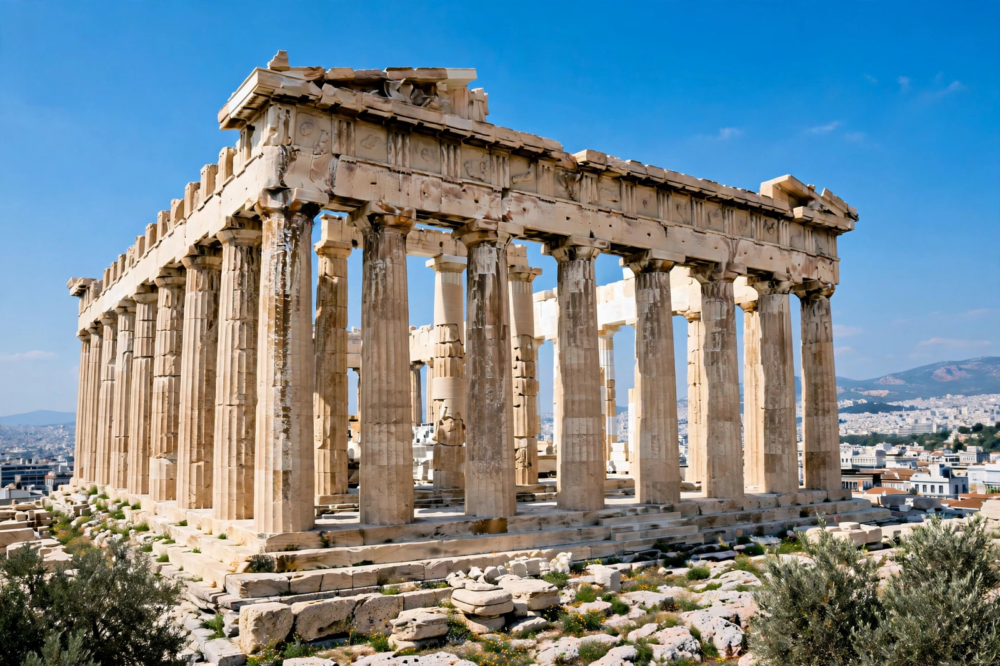

Ancient Greece

[Image: the Parthenon on the Acropolis of Athens, its marble columns against a bright blue sky]Ancient Greece was a civilisation belonging to a period of Greek history lasting from the Greek Dark Ages (around the twelfth–ninth centuries BC) to the end of classical antiquity (c. AD 600). Its heartland was the Greek mainland, the Aegean islands and the coasts of Anatolia, and Greek colonies spread around the Mediterranean and Black Sea. It is regarded as a foundational culture of Western civilisation.
Politically fragmented into independent city-states (poleis) such as Athens and Sparta, the Greek world nevertheless shared a language, religion and culture, expressed in the Olympic Games, the epics of Homer, and common sanctuaries such as Delphi.
Classical period
In the fifth century BC the Greek states repelled two Persian invasions (490 and 480–479 BC) at battles including Marathon, Thermopylae, Salamis and Plataea. Athens then built a maritime empire, and its democratic government, drama, philosophy and architecture — the Parthenon above all — made the period 'classical'.
Rivalry between Athens and Sparta produced the Peloponnesian War (431–404 BC), which ended with Athens' defeat and left the city-states weakened and vulnerable to Macedon.
Macedon and the Hellenistic world
Philip II of Macedon united Greece by force, and his son Alexander the Great conquered the Persian Empire, carrying Greek culture as far as Egypt, Persia and the Indus Valley before his death in 323 BC. The Hellenistic kingdoms that followed — Ptolemaic Egypt, the Seleucid Empire and Antigonid Macedon — spread Greek language and learning for three centuries.
Greece was absorbed into the Roman Republic in the second century BC, but Greek philosophy, science, mathematics (Euclid, Archimedes), literature and political ideas profoundly shaped Rome and, through it, Europe and the wider world.